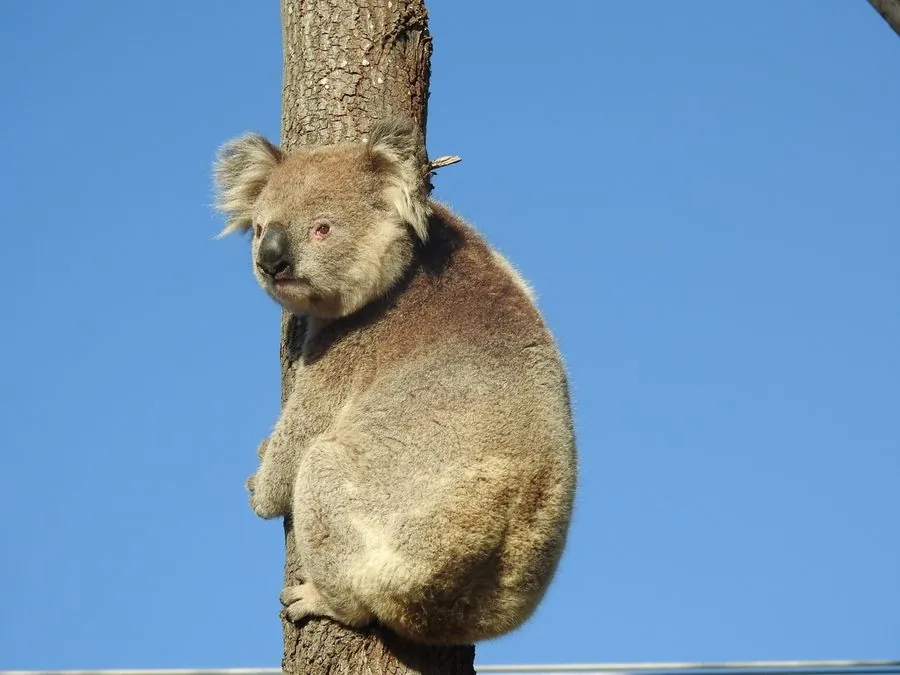

哺乳动物 · 动物界
树袋熊 Phascolarctos cinereus

澳大利亚特有的树栖有袋类，几乎只吃桉树叶，每天睡眠 18–22 小时，靠灵敏嗅觉挑选合适叶片。
- 分类
- 门脊索动物门纲哺乳纲目双门齿目科树袋熊科属树袋熊属
- 栖息环境
- 澳大利亚东部和东南部的桉树林，偏好河岸与肥沃土壤的林地
- 地理分布
- 澳大利亚东部和东南部的桉树林区，从昆士兰到维多利亚
- 保护级别
- IUCN 易危（VU）
物种志
树袋熊体长 0.6–0.85 米，体重 4–15 kg，雄性大于雌性。它全身覆灰褐色厚毛，耳大而圆，绒状鼻裸露呈黑色；前肢有对生拇指，后肢内侧两趾与其他三趾分开，可牢牢抓住树干；育儿袋开口向后，方便幼仔进出。
树袋熊分布于澳大利亚东部的桉树林，几乎只吃桉树叶，能从数十种桉树中挑选特定种类和成熟度的叶片，靠嗅觉判断毒素含量。桉树叶热量低且含毒素，它每天要睡 18–22 小时以节省能量，消化道中的盲肠长达 2 米，用来发酵分解叶片。树袋熊多为独居，通过雄性胸腺的气味和叫声交流；雌性妊娠期约 35 天，每胎 1 仔，幼仔在育儿袋中生活约 6 个月。栖息地砍伐、干旱和疾病使多地种群下降，澳大利亚部分地区已将其列为濒危。
形态与习性
- 食性几乎只吃桉树叶，靠嗅觉挑选低毒叶片
- 体长0.6–0.85 m
- 体重4–15 kg，雄性大于雌性
- 寿命野外约 10–15 年
- 繁殖妊娠期约 35 天，每胎 1 仔，袋内生活约 6 个月
- 睡眠每天 18–22 小时
- 盲肠长度可达 2 m，用于发酵分解桉树叶
趣味知识
- 树袋熊几乎只吃桉树叶，能从数十种桉树中挑出毒性较低的叶片。
- 它每天要睡 18–22 小时，以节省消化低热量桉树叶的能量。
- 树袋熊的指纹与人类极为相似，肉眼几乎难以区分。
- 育儿袋开口朝后，方便幼仔探出头来取食和排便。